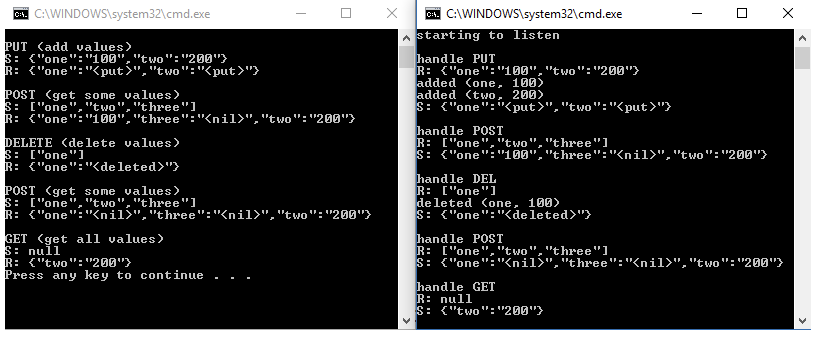

C++ REST SDK
0. 참고 문헌
- Modern C++ micro-service implementation + REST API - Iván Mejía
- Modern C++ micro-serivce + REST API, Part II + REST API - Iván Mejía
1. C++ REST SDK
C++ REST SDK는 modern asynchronous C++ API를 사용한 코드로 클라우드 기반 CLIENT-SERVER 통신을 위한 마이크로소프트 프로젝트(프로젝트명 Casablanca)이다. 이 프로젝트는 C++ 개발자들이 서비스에 접속하고 상호작용할 수 있도록 돕는 것을 목표로 한다.
C++ REST SDK의 특징은 HTTP를 이용한 Client, Server를 쉽게 구현할 수 있으며, JSON 형태를 이용한다. 또한 Windows desktop, Windows Store(UWP), Linux, OS X, Unix, iOS 및 Android 등 다양한 플랫폼에서 운영될 수 있는 크로스 플랫폼을 지원한다.
이러한 C++ REST SDK는 C++를 이용한 뛰어난 성능의 REST 애플리케이션을 쉽고 빠르게 만들 수 있도록 한다.
2. 예제
C++ REST SDK를 이용한 SERVER-CLIENT 예제를 ROS2로 구현한 예제(C++ REST SDK example github pages)이다.
2.1 SERVER
SERVER는 CLINET로부터 요청받은 명령을 dictionary 변수에 저장하고, 이를 이용하여 CLIENT의 요청을 처리하는 노드이다.
2.1.1 main 함수
http_listener객체를 생성(URI 지정)한다.display_json()함수를 이용하여 request 처리 시 json 형태의 정보를 시각화한다.support()함수로 request method 지정 및 handler 함수 지정한다.- listener loop 동작시킨다.
#include <cpprest/http_listener.h>
#include <cpprest/json.h>
using namespace web;
using namespace web::http;
using namespace web::http::experimental::listener;
#include <iostream>
#include <map>
#include <set>
#include <string>
using namespace std;
#define TRACE(msg) cout << msg
#define TRACE_ACTION(a, k, v) cout << a << U(" (") << k << U(", ") << v << U(")\n")
map<utility::string_t, utility::string_t> dictionary;
void display_json(
json::value const & jvalue,
utility::string_t const & prefix)
{
cout << prefix << jvalue.serialize() << endl;
}
int main()
{
http_listener listener(U("http://localhost/restdemo"));
listener.support(methods::GET, bind(&handle_get, this, std::placeholders::_1));
listener.support(methods::POST, bind(&handle_post, this, std::placeholders::_1));
listener.support(methods::PUT, bind(&handle_put, this, std::placeholders::_1));
listener.support(methods::DEL, bind(&handle_del, this, std::placeholders::_1));
try
{
listener
.open()
.then([&listener](){TRACE(L"\nstarting to listen\n");})
.wait();
while (true);
}
catch (exception const & e)
{
wcout << e.what() << endl;
}
return 0;
}
2.1.2 Method - get
2.1.2.1 handle_get
answer변수에request에 대한 json::value 데이터 저장한다.request에 대한reply()수행한다.
void handle_get(http_request request)
{
TRACE(U("\nhandle GET\n"));
auto answer = json::value::object();
for (auto const & p : dictionary)
{
answer[p.first] = json::value::string(p.second);
}
display_json(json::value::null(), U("R: "));
display_json(answer, U("S: "));
request.reply(status_codes::OK, answer);
}
2.1.3 Method - post, put, del
POST, PUT, DEL methods는 GET 방식보다 복잡한 구조로 되어있다.
2.1.3.1 handle_request
handle_request()함수는request된 json 값을 처리하고,response할 json 값을 만드는 요청을 처리하기 위한 일반적인 메소드 함수이다.POST,PUT,DELmethods handler는handle_request()를 이용하여 처리한다.
void handle_request(
http_request request,
function<void(json::value const &, json::value &)> action)
{
auto answer = json::value::object();
request
.extract_json()
.then([&answer, &action](pplx::task<json::value> task) {
try
{
auto const & jvalue = task.get();
display_json(jvalue, U("R: "));
if (!jvalue.is_null())
{
action(jvalue, answer);
}
}
catch (http_exception const & e)
{
wcout << e.what() << endl;
}
})
.wait();
display_json(answer, U("S: "));
request.reply(status_codes::OK, answer);
}
2.1.3.2 handle_post
void handle_post(http_request request)
{
TRACE("\nhandle POST\n");
handle_request(
request,
[](json::value const & jvalue, json::value & answer)
{
for (auto const & e : jvalue.as_array())
{
if (e.is_string())
{
auto key = e.as_string();
auto pos = dictionary.find(key);
if (pos == dictionary.end())
{
answer[key] = json::value::string(U("<nil>"));
}
else
{
answer[pos->first] = json::value::string(pos->second);
}
}
}
});
}
2.1.3.3 handle_put
void handle_put(http_request request)
{
TRACE("\nhandle PUT\n");
handle_request(
request,
[](json::value const & jvalue, json::value & answer)
{
for (auto const & e : jvalue.as_object())
{
if (e.second.is_string())
{
auto key = e.first;
auto value = e.second.as_string();
if (dictionary.find(key) == dictionary.end())
{
TRACE_ACTION(U("added"), key, value);
answer[key] = json::value::string(U("<put>"));
}
else
{
TRACE_ACTION(U("updated"), key, value);
answer[key] = json::value::string(U("<updated>"));
}
dictionary[key] = value;
}
}
});
}
2.1.3.4 handle_del
void handle_del(http_request request)
{
TRACE("\nhandle DEL\n");
handle_request(
request,
[](json::value const & jvalue, json::value & answer)
{
set<utility::string_t> keys;
for (auto const & e : jvalue.as_array())
{
if (e.is_string())
{
auto key = e.as_string();
auto pos = dictionary.find(key);
if (pos == dictionary.end())
{
answer[key] = json::value::string(U("<failed>"));
}
else
{
TRACE_ACTION(U("deleted"), pos->first, pos->second);
answer[key] = json::value::string(U("<deleted>"));
keys.insert(key);
}
}
}
for (auto const & key : keys)
dictionary.erase(key);
});
}
2.2 Client
- HTTP request를 만드는
http_client객체를 생성한다. - request method, path 및 json 값을 지정할 수 있는 오버로드 된
make_request()함수를 가진다. make_request()의 경우 reqeust를 디스패치하고, 받은 response를 콘솔에 표시하는 역할을 한다.GET매소드의 경우 json 값을 보내지 않는다.
#include <cpprest/http_client.h>
#include <cpprest/json.h>
using namespace web;
using namespace web::http;
using namespace web::http::client;
#include <iostream>
using namespace std;
void display_json(
json::value const & jvalue,
utility::string_t const & prefix)
{
cout << prefix << jvalue.serialize() << endl;
}
pplx::task<http_response> make_task_request(
http_client & client,
method mtd,
json::value const & jvalue)
{
return (mtd == methods::GET || mtd == methods::HEAD) ?
client.request(mtd, U("/restdemo")) :
client.request(mtd, U("/restdemo"), jvalue);
}
void make_request(
http_client & client,
method mtd,
json::value const & jvalue)
{
make_task_request(client, mtd, jvalue)
.then([](http_response response)
{
if (response.status_code() == status_codes::OK)
{
return response.extract_json();
}
return pplx::task_from_result(json::value());
})
.then([](pplx::task<json::value> previousTask)
{
try
{
display_json(previousTask.get(), U("R: "));
}
catch (http_exception const & e)
{
cout << e.what() << endl;
}
})
.wait();
}
int main()
{
http_client client(U("http://localhost:9090"));
auto putvalue = json::value::object();
putvalue[U("one")] = json::value::string(U("100"));
putvalue[U("two")] = json::value::string(U("200"));
cout << U("\nPUT (add values)\n");
display_json(putvalue, U("S: "));
make_request(client, methods::PUT, putvalue);
auto getvalue = json::value::array();
getvalue[0] = json::value::string(U("one"));
getvalue[1] = json::value::string(U("two"));
getvalue[2] = json::value::string(U("three"));
cout << U("\nPOST (get some values)\n");
display_json(getvalue, U("S: "));
make_request(client, methods::POST, getvalue);
auto delvalue = json::value::array();
delvalue[0] = json::value::string(U("one"));
cout << U("\nDELETE (delete values)\n");
display_json(delvalue, U("S: "));
make_request(client, methods::DEL, delvalue);
cout << U("\nPOST (get some values)\n");
display_json(getvalue, U("S: "));
make_request(client, methods::POST, getvalue);
auto nullvalue = json::value::null();
cout << U("\nGET (get all values)\n");
display_json(nullvalue, U("S: "));
make_request(client, methods::GET, nullvalue);
return 0;
}
2.3 Result
